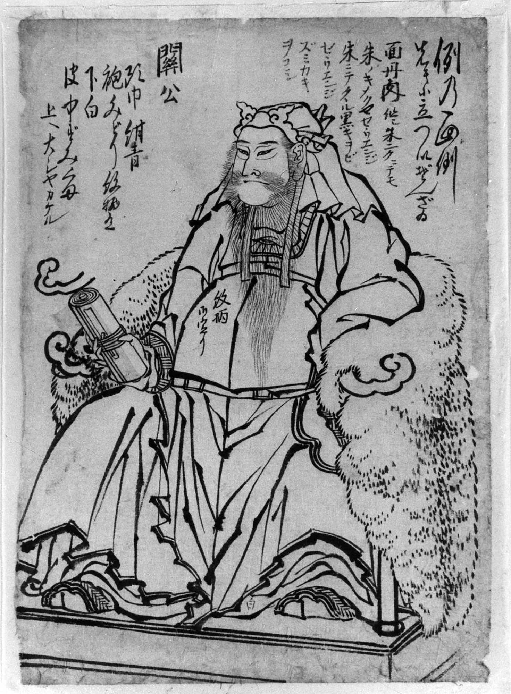

Zeul războiului și loialității
| Guanyu | |
|---|---|
|
 |
|
| Nume chinez | 關羽 (Guān Yǔ) |
| Titlu | Zeul Războiului |
| Perioada istorică | dinastiei Han târzie, perioada celor Trei Regate |
| Armă faimoasă | Green Dragon Crescent Blade (Halabarda lui) |
| Virtute principală | Loialitate și Dreptate |
| Venerare | Taoism, Confesiunea Ortodoxă |
Guanyu este una dintre cele mai importante divinități din mitologia și religia chineză, cunoscut ca Zeul Războiului și Simbolul Loialității. Deși a fost o persoană istorică din perioada Trei Regate, a fost divinizat în cultura și religia chineză datorită virtuților și faptelor sale memorabile.
Guanyu s-a născut la sfârșitul dinastiei Han și a fost un general renumit sub conducerea lui Liu Bei. A devenit faimos pentru abilități militare extraordinare, loialitate nestrămutatătoare și onoare. Între-una dintre cele mai faimoase bătălii, a fost capturat de dușmani, dar a refuzat cu fermitate să-l trădeze pe Liu Bei și a fost executat pentru refuzul lui.
După moartea sa, Guanyu a fost venerată ca un sfânt militar. Credința populară susține că spiritul lui a apărut în mai multe ocaziuni, apărând în lupte pentru a ajuta oasele lui Liu Bei. Treptat, a fost ridicat la statutul de zeu plin în pantheonul chinez și a devenit protector al soldaților, polițiștilor și oamenilor de afaceri care apreciază loialitatea și integritatea.
Guanyu este adesea descris părtând un costum roșu și verde, cu o barbă lungă și o expresie solemnă. Arma sa famoasa, Green Dragon Crescent Blade (o halabardă gigantică), este una dintre cele mai recunoscute obiecte din mitologia chineză. Culoarea roșie cu care este înfățișat simbolizează virtutea, curajul și dreptatea.
Templele dedicate lui Guanyu se găsesc în toată lumea, în special în comunitățile chineze. Credincioșii vin să-i ceara ajutorul, protecție și îndrumaresă în chestiuni de morală și onoare. Ziua lui Guanyu, 13 iunie, este marcată cu ceremonii și oferte în temple.
Site făcut de
Ursulescu Florin-Alexandru, cl. XII-a A, Liceul Atanasie Marienescu